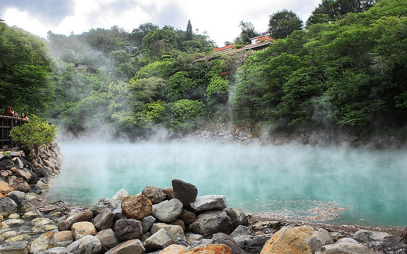
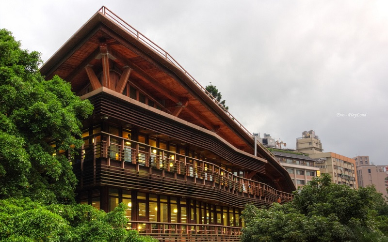
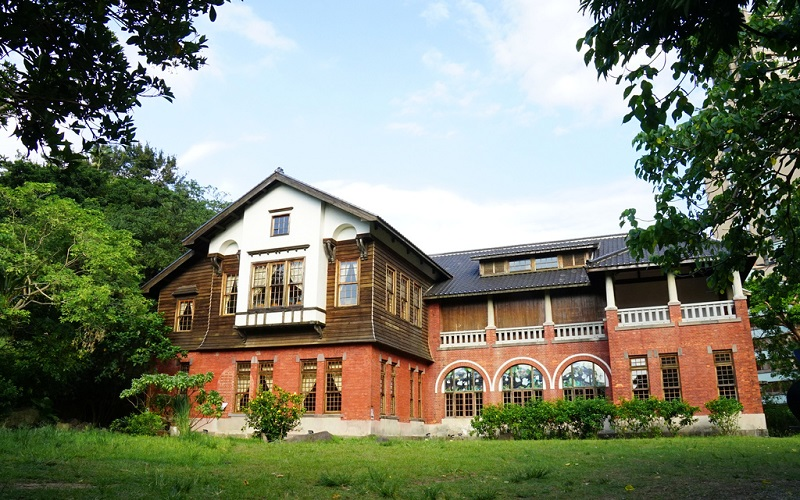
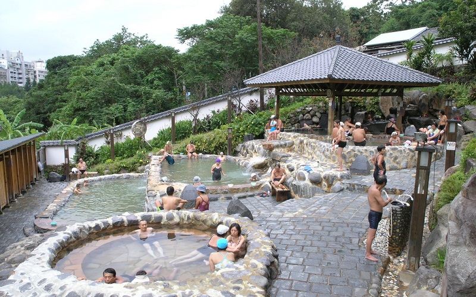

Beitou
Taipei City
The Thermal Valley
  Beitou District is the northernmost of the twelve districts of Taipei City. During the Japanese rule period, Beitou was
a village at the entrance of the sulfur district. The Japanese constructed the Beitou Public Bathhouse which provided
sulfur springs, the largest bathhouse in East Asia at that time. The Beitou Public Bathhouse has become the
Beitou Hot Spring Museum which introduces the history of hot springs here. The Thermal Valley is one of the sources
supplying the area’s hot springs. It is a sodium carbonate springs which is green and with the water temperature ranges
from 80-100 degree Celsius. Visitors used to boil eggs in the hot springs, but the practice has since been prohibited—not
only to protect the water quality but to keep tourists from falling. There are many hot spring hotels around there, but
if you want to enjoy hot springs in a lower price, the Beitou Park Outdoor Hot Spring Bathing Pool is recommanded since
the ticket price is only NT$ 40. The Taipei Public Library Beitou Branch is another special spot. It is a the first library
construct as a green building in Taiwan. The building uses large windows to reduce the consumption of lighting electricity.
The roof was designed to be partially covered with photovoltaic cells to generate electricity and also designed to capture
rain water to be stored and used to flush toilets
- Best seasons: all year around
- Transportation: MRT Beitou station.